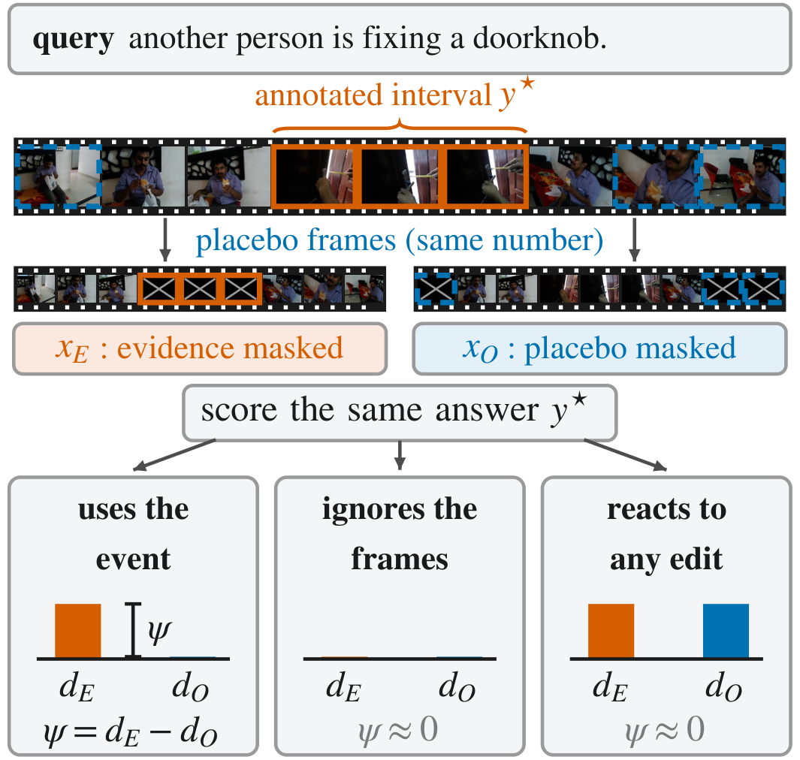
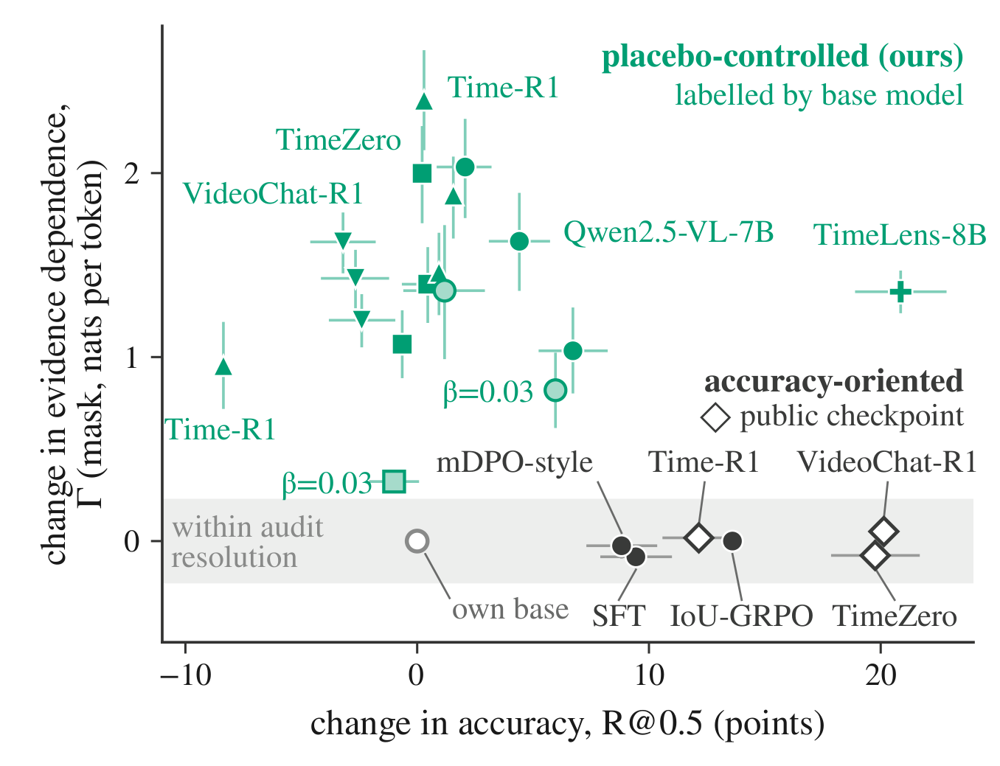
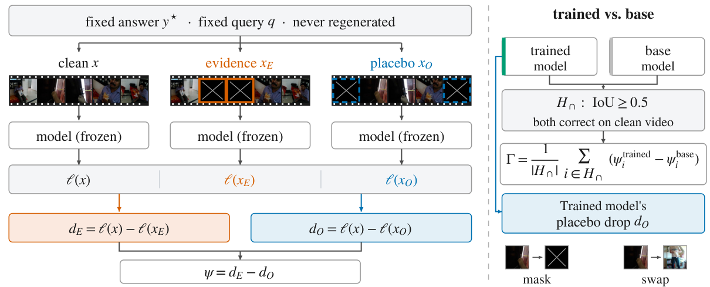
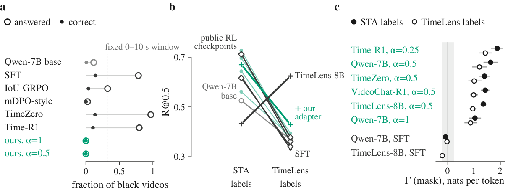
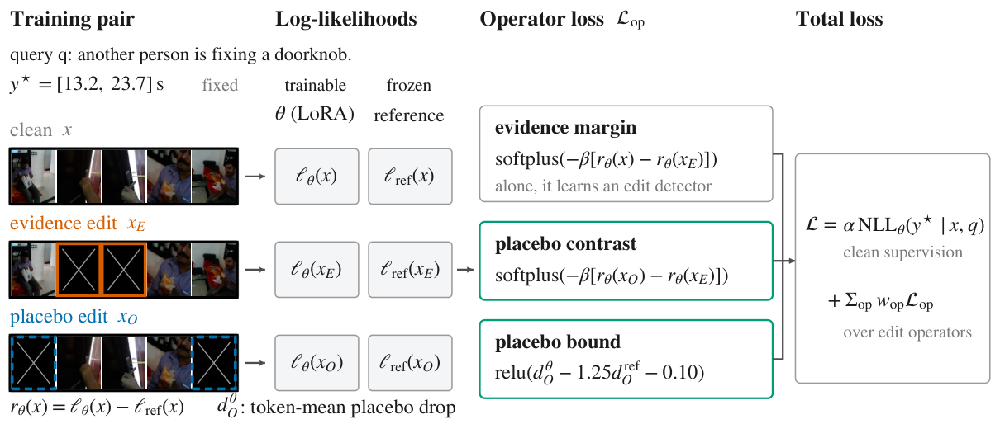
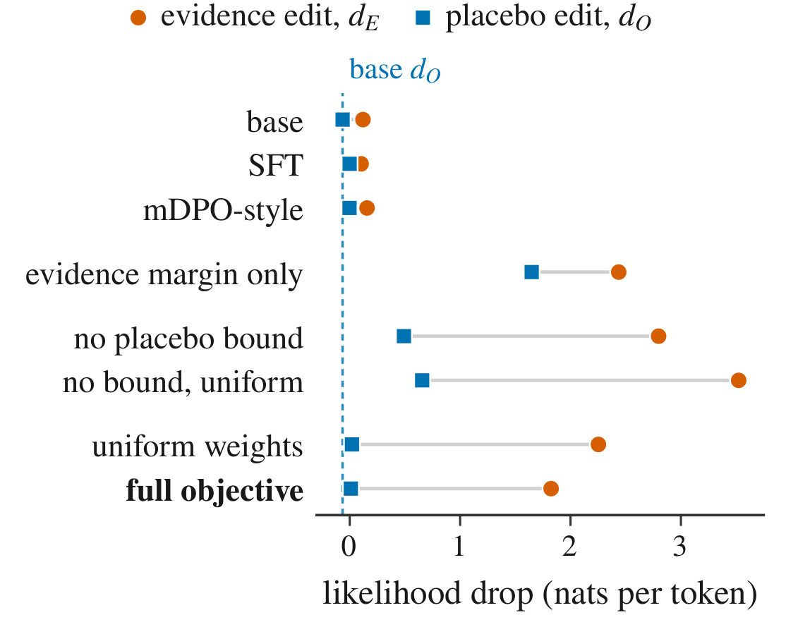
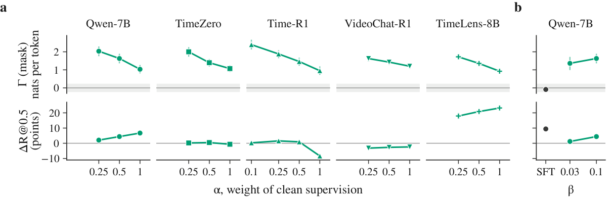
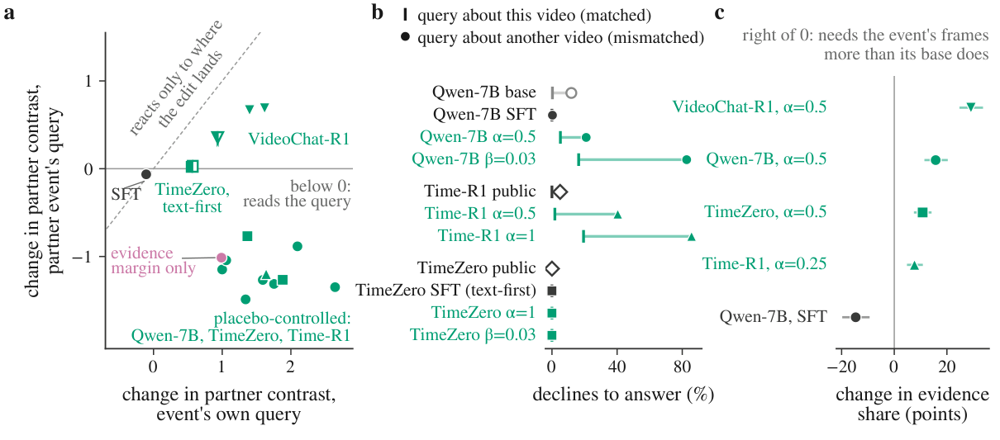

Accuracy Is Not EvidenceMeasuring and Training Evidence Dependence in Video Temporal Grounding
1Beijing University of Posts and Telecommunications 2Institute of Automation, Chinese Academy of Sciences
3Peking University 4Independent Researcher †Corresponding author


Abstract
In video temporal grounding, a correct interval can come from finding the event, answering blind or fitting one annotation style, and Recall at IoU scores them alike. We measure evidence dependence, how much the answer rests on the event's frames. Our fixed-answer audit edits either the frames inside the annotated interval or, as a placebo, as many frames elsewhere in the same video, and compares the two drops in the annotated answer's likelihood. Supervised fine-tuning and three public checkpoints trained with IoU-reward reinforcement learning raise the accuracy of Qwen2.5-VL-7B by 9 to 20 points, partly by answering blind and by fitting one annotation. Yet their answers rest on the event no more than the base model's, and the same holds for IoU-reward training on our data at the audit's frame rate. This comparison is a difference of the model's own likelihoods, so we can train on it. A placebo contrast and a bound on the placebo drop rule out learning to react to any edit. With them, evidence dependence rises in all five base models we train, and the weight on clean supervision controls how much. Added to IoU-reward training, the objective raises evidence dependence while keeping the accuracy gain. Masking the event's frames makes the trained models decline or miss the event more often than their base; masking as many other frames does not. The dependence moves to another event when the query names it, and holds on a second dataset and under patch scrambling, an edit never used in training.
The fixed-answer audit
The audit holds the annotated answer and the query fixed and scores the answer by teacher forcing. Editing the frames inside the annotated interval gives the evidence drop; editing as many frames outside it with the same operator gives the placebo drop. Their difference is zero for a model that reacts equally to every edit, and a trained model is compared with its own base on the questions both localise correctly.

What post-training for accuracy learns
Part of the accuracy that post-training adds comes from answering blind or from fitting one annotation style. On the questions annotated in both Charades-STA and TimeLens, the two label sets rank the 7B models very differently, while the sign of evidence dependence holds under both.

The placebo-controlled objective
Rewarding the evidence drop alone teaches the model to react to any edit. The objective adds a contrast against the matched placebo and a bound on the placebo drop, both computed against the frozen base, next to clean supervision on the annotated answer.



Outside the training loss
The trained models respond to the query and to the evidence. The dependence moves to a partner event when the query names it, and masking the event's frames removes a larger share of the accuracy than it does for the base.

BibTeX
@article{jin2026accuracy,
title = {Accuracy Is Not Evidence: Measuring and Training Evidence Dependence in Video Temporal Grounding},
author = {Jin, Zijie and Zhao, Shuai and Tao, Haoran and Huang, Chaomin and Luo, Liwen},
journal = {arXiv preprint},
year = {2026}
}